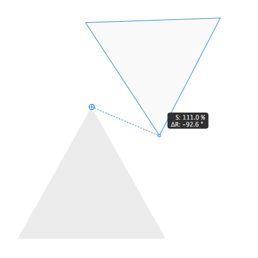
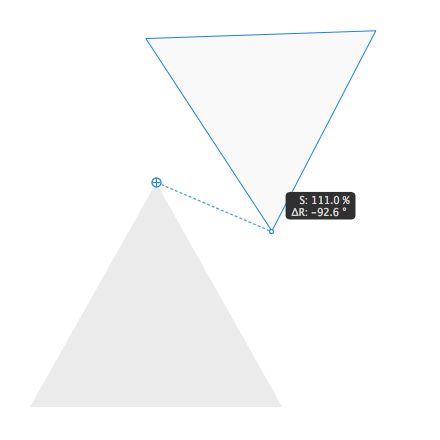
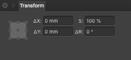

Point Transform Tool
Point Transform Tool
The Point Transform Tool lets you scale or rotate a selected object from any of its nodes about a positioned transform origin.

The Point Transform Tool lets you scale or rotate a selected object from any of its nodes about a positioned transform origin.

The tool is especially suited to transforming an object about not only its own geometry (or chosen node) but that of another object's geometry. The point of transformation is always the object's transform origin which can be repositioned onto the same or other object's geometry (or chosen node); you can drag from a node on your object to transform about the transform origin.
When dragging an object with the Point Transform Tool active, a dotted line relative to the transform origin will appear, and the object's relative scale and rotation will be displayed as it is transformed.

The Point Transform Tool can also be used in isometric (axonometric) transformations, relative to the current grid plane. This makes it easy to snap to a specific point, scale between the focal point and any given point on a curve, and rotate a point on the curve about a given focal point. The transform center point uses the same point assigned by the custom rotation center in the Move Tool, but can easily be assigned to a new point on the curve by clicking or dragging it to any location.
The following settings can be adjusted from the context toolbar: